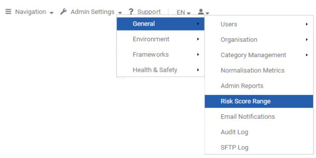
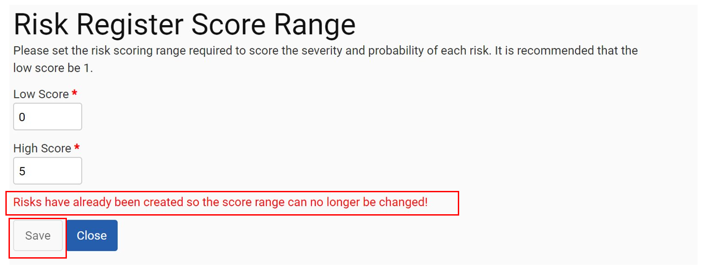
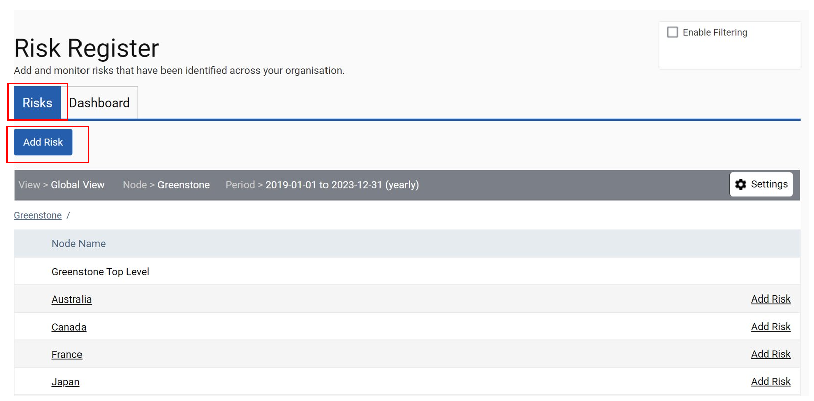
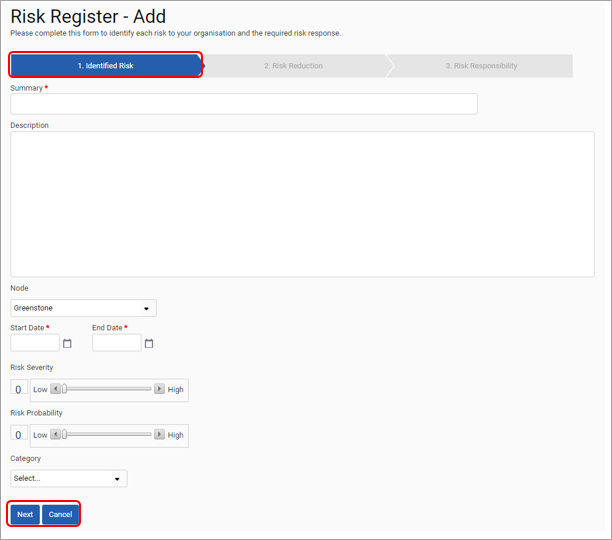
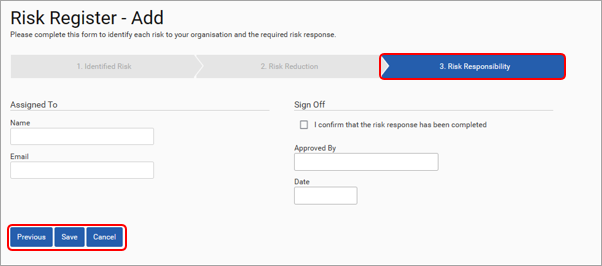
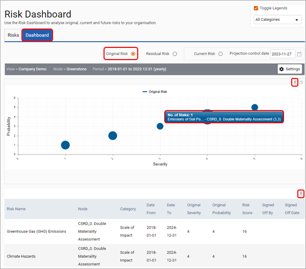
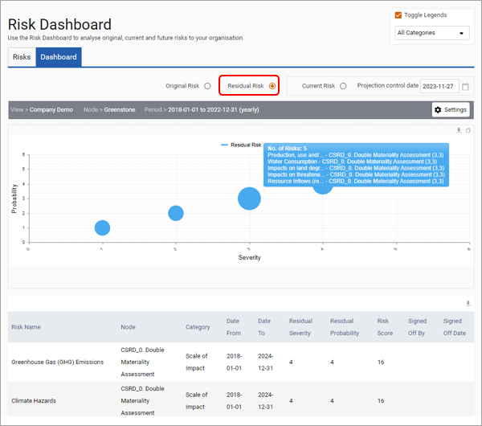
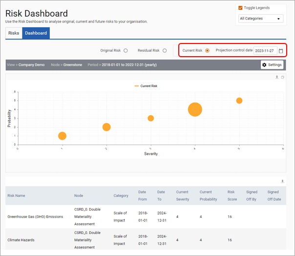

Risks can be accessed using the ‘Utilities’ tile located on the homepage. Alternatively, an overview of risks can also be accessed through the ‘My Tools’ menu located on various screens in Enterprise. Before risks can be added the ‘Risk Score Range’ must be set via the ‘Admin Settings’ menu.

The Admin User should set the risk scoring range that is required by the organization to score the severity and probability of each risk. It is recommended that the lowest score be 1. Once the ‘Risk Score Range’ has been set and data has been uploaded it is not possible to amend the scoring range without removing all previously recorded risks.

The Risk Register provides users with the ability to add and monitor risks that have been identified across your organization. You can indicate the severity, probability, and period for which that risk is applicable.

The risks displayed within the table can be customized by changing the settings and the table can be filtered to display only those risks which you are interested in viewing. It is in the table that you can also Edit or Delete a risk.
To add a new risk, select the ‘Add Risk’ button at the top-left of the screen. This will load the following three-step wizard, which allows you to enter information for identified risks, risk reduction, and risk responsibility. Once each step is completed, click ‘Next’ to progress to the next step. Please note that you must assign a risk to a specific node within the site, which must apply to a set period.
Wizard Step 1 – Identified Risk

Wizard Step 2 – Risk Reduction
Wizard Step 3 – Risk Responsibility

The ‘Risk Register Report’ allows you to export all risk related information to excel. The report can be generated in ‘General Reports’ which is described in the next section. Alternatively, the Risk Dashboard enables you to analyse original, residual, and current risks to your organisation.
Original risk
Selecting ‘Original Risk’ enables you to view the risk score that was originally assigned to each risk, whilst the table below provides this information as text. Both the table and the dashboard can be downloaded using the button highlighted below. The Original Risk dashboard applies the Risk Probability and Risk Severity score users assigned in Stage 1 of the risk form. Hover over the risk bubbles to see a summary of included risks.

Residual Risk
Select ‘Residual Risk’ to view the risk score once mitigating activities have been carried out and signed off. The Residual Risk dashboard applies the Residual Probability and Residual Severity score users assigned in Stage 2 of the risk form.

Current Risk
Selecting ‘Current Risk’ provides a snapshot of the current risk profile, enabling you to see original risks and residual risks together depending on which mitigation activities have been ticked as Signed Off in the risk form. If a risk has been Signed Off, the residual risk score is applied. If a risk has not been Signed Off in the form, the original risk score is applied. The date of the snapshot is driven using the ‘Projection Control Date’ function so users can see progress on risk mitigation for different time periods.
